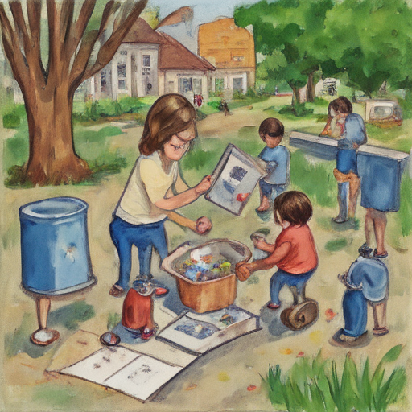

Today at Silver Rail Elementary, I encountered an unexpected challenge during recess. The kids were all focused on their games, but Leo XIV's idea to turn a trash can into a solar-powered toy car caught everyone's attention. His radical thinking inspired his classmates to join in and brainstorm other inventions using recycled materials. It was refreshing to see such creativity and collaboration among the young minds at our school.

Keywords: Silver Rail Elementary, Radical Thinking, Leo XIV
Fictional diary entry.